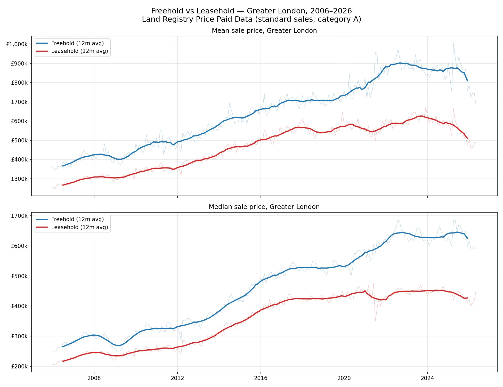
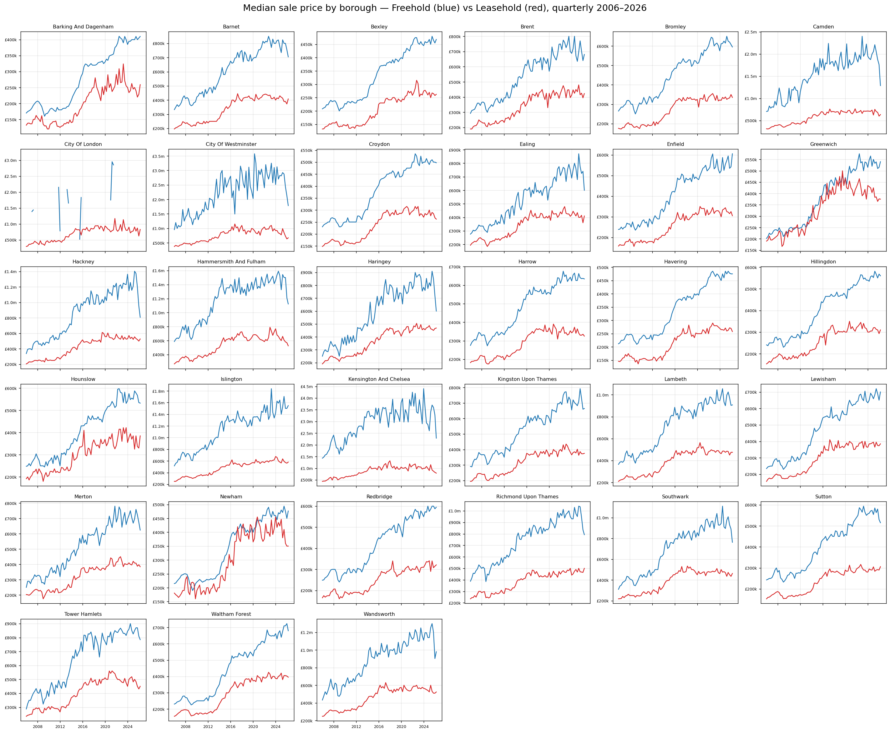
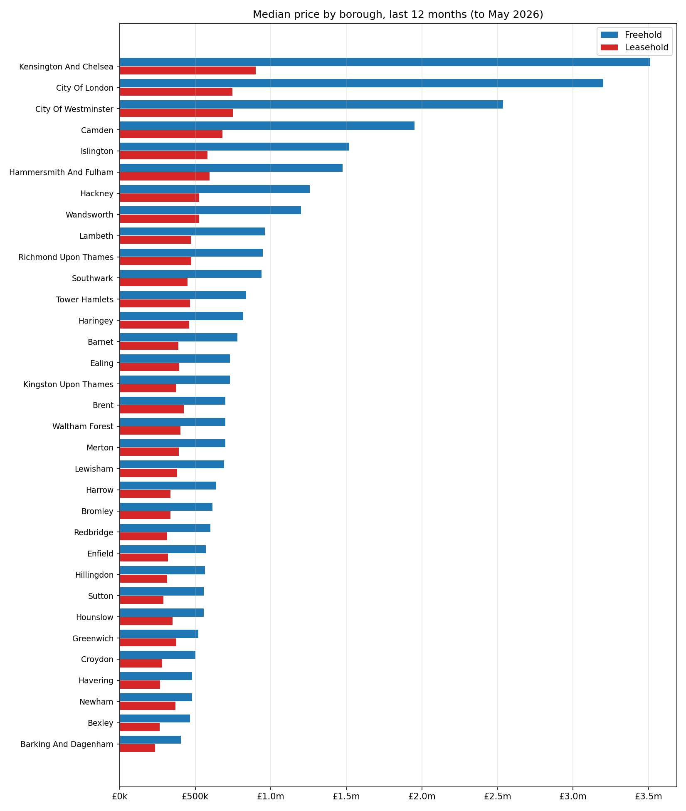
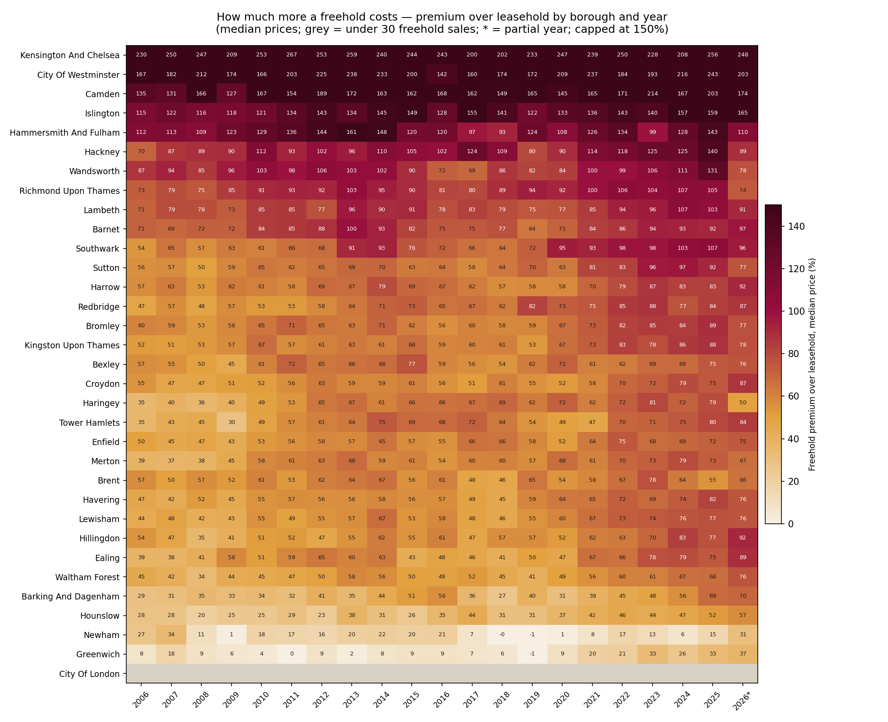

Twenty years ago a freehold in London cost 23% more than a leasehold. Today the premium is 44%. Since 2016, leasehold prices have barely moved — a fall in real terms — while freeholds climbed on. Every registered sale, sliced by tenure and borough.
Precise monthly sale prices by tenure for Greater London and each borough. Faint lines are raw monthly values; bold lines are 12-month centred averages.
Reading note: tenure is heavily confounded with property type — leasehold mostly means flats, freehold mostly houses. The final ~6–12 months are incomplete (registration lag) and will revise upward; the City of London freehold series is a handful of sales per year, so treat it as anecdotal. Standard (category A) sales only.
Every borough, coloured by price or by the freehold premium. Drag the year slider to watch two decades unfold; hover a borough for the figures.
Median price of sales in the selected year. Boroughs turn grey when there are under 30 freehold sales to compare (the City of London, almost every year). 2026 covers January–May only.
Static charts produced by the analysis pipeline. Click any plate to open it full size.



